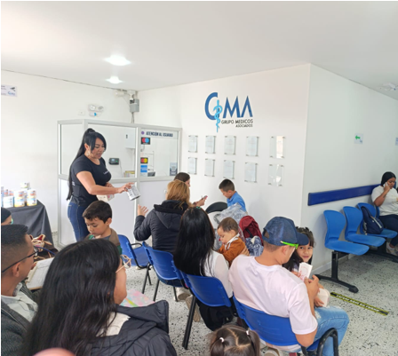
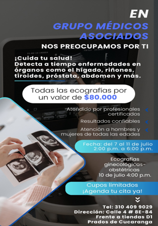
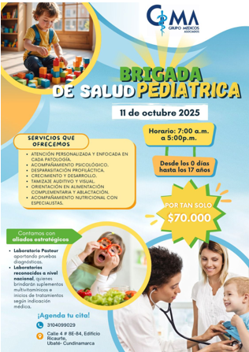
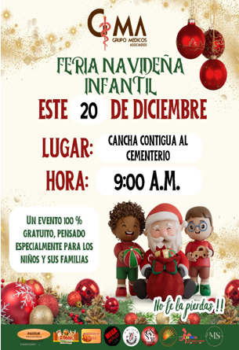

Eventos
Mantente informado sobre nuestras charlas, talleres y campañas de salud.
Próximos Eventos

CONGRESO MEDICO PROVINCIAL
13 y 14 de Junio, 2026
10:00 AM - 12:00 PM
Salón de Conferencias GMA
Espacio académico orientado a la actualización profesional y al intercambio de conocimientos en el área de la salud.
El próximo 13 y 14 de junio de 2026 se realizará el Congreso Médico organizado por Grupo Médicos Asociados, un espacio académico y científico diseñado para fortalecer la actualización profesional y el intercambio de conocimiento entre especialistas de diversas áreas de la salud. Durante estos dos días se desarrollarán conferencias, paneles y talleres con expertos, abordando temas de alto impacto clínico y tendencias actuales en medicina. El evento busca promover la reflexión, el aprendizaje continuo y la integración entre profesionales del sector, favoreciendo el desarrollo de buenas prácticas y la excelencia en la atención a los pacientes.Con esta iniciativa, la institución reafirma su compromiso con la formación permanente, la innovación en salud y la creación de espacios colaborativos que contribuyen al fortalecimiento del talento humano en el campo médico.
Eventos Anteriores

BRIGADA ECOGRAFÍAS
Semana del 7 al 11 de Julio, 2025
Jornada de Ecografías para Diagnóstico y Prevención.
Del 7 al 11 de julio se llevó a cabo una jornada especial de ecografías diagnósticas, orientada a la detección oportuna de enfermedades en órganos como hígado, riñones, tiroides, próstata y abdomen, entre otros.
Durante la actividad se ofrecieron estudios ecográficos a un valor accesible, realizados por profesionales certificados y con resultados confiables, garantizando atención a hombres y mujeres de todas las edades. Asimismo, se desarrolló una jornada específica de ecografías ginecológicas y obstétricas el 10 de julio a las 4:00 p.m.
Con esta iniciativa, la institución reafirmó su compromiso con la prevención, el diagnóstico temprano y el acceso a servicios de apoyo diagnóstico de calidad para la comunidad.

JORNADA DE PEDIATRÍA
11 de Octubre, 2025
Atención Pediátrica Integral para Niños y Adolescentes.
El 11 de octubre de 2025 se llevó a cabo la Brigada de Salud Pediátrica, una jornada integral enfocada en la atención y el bienestar de niños y adolescentes desde los 0 días hasta los 17 años.
Durante la actividad se brindó atención médica personalizada, acompañamiento psicológico y nutricional, desparasitación profiláctica, valoración de crecimiento y desarrollo, tamizaje auditivo y visual, así como orientación en alimentación complementaria y ablactación.
Con esta iniciativa, la institución reafirmó su compromiso con la salud infantil, promoviendo la prevención, el diagnóstico oportuno y la educación a las familias, en un espacio accesible, humano y de alta calidad para la comunidad.

FERIA NAVIDEÑA
20 de Diciembre, 2025
Feria Navideña Infantil de Integración Comunitaria.
El pasado 20 de diciembre se llevó a cabo la Feria Navideña Infantil, un evento organizado para brindar un espacio de integración, alegría y celebración a los niños y sus familias.
La actividad se realizó en la cancha contigua al cementerio, iniciando a las 9:00 a.m., y contó con una amplia participación de la comunidad. Fue una jornada 100 % gratuita, diseñada especialmente para fortalecer los lazos familiares y promover valores como la solidaridad y la unión en esta temporada decembrina.
Con esta iniciativa, la institución reafirmó su compromiso social, generando espacios recreativos y comunitarios que contribuyen al bienestar integral de la población infantil.